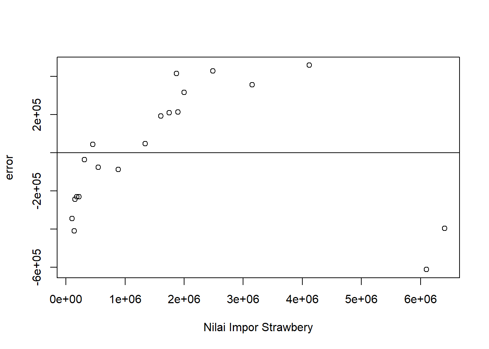

setwd("D:/METOPEL UAS/ZAHRA METOPEL")
library(readxl)
library(tidyverse)
library(kableExtra)Analisis Impor Strawberry Terhadap Kinerja Ekspor Jeruk Mandarin Di China.
Metode Penelitian Politeknik APP Jakarta

1 Pendahuluan
1.1 Latar belakang
Dalam beberapa tahun terakhir, China telah mengalami peningkatan permintaan yang signifikan terhadap buah strawberry, khususnya varietas putih. Fenomena ini telah mendorong impor strawberry dari negara-negara lain, seperti Thailand, untuk memenuhi kebutuhan pasar. Sementara itu, China juga dikenal sebagai produsen jeruk mandarin yang besar. Kedua komoditas ini, meskipun berbeda, memiliki beberapa kemiripan dalam hal kandungan nutrisi.
Namun, belum ada penelitian yang mendalam tentang bagaimana impor strawberry dapat mempengaruhi kinerja ekspor jeruk mandarin di China. Oleh karena itu, penelitian ini bertujuan untuk mengisi celah pengetahuan ini dengan mengevaluasi pengaruh impor strawberry terhadap kinerja ekspor jeruk mandarin.
Selain itu, penelitian ini juga akan mempertimbangkan variabel lain yang mungkin mempengaruhi hubungan ini, yaitu nilai tukar mata uang China (CNY) terhadap Dolar Amerika Serikat (USD). Nilai tukar mata uang dapat mempengaruhi ekonomi suatu negara, termasuk perdagangan internasional. Oleh karena itu, penelitian ini akan mencoba untuk memahami bagaimana fluktuasi nilai tukar CNY/USD dapat mempengaruhi hubungan antara impor strawberry dan ekspor jeruk mandarin.
Untuk menganalisis hubungan ini, penelitian ini akan menggunakan metode regresi linear. Metode ini memungkinkan peneliti untuk memahami hubungan antara satu variabel dependen (dalam hal ini, kinerja ekspor jeruk mandarin) dan satu atau lebih variabel independen (dalam hal ini, impor strawberry dan nilai tukar CNY/USD).
Dengan demikian, penelitian ini diharapkan dapat memberikan wawasan baru tentang dinamika perdagangan komoditas pertanian di China dan bagaimana variabel makroekonomi seperti nilai tukar mata uang dapat mempengaruhi perdagangan ini. Hasil penelitian ini diharapkan dapat digunakan oleh pembuat kebijakan dan stakeholder industri untuk membuat keputusan yang lebih baik dan strategis.
1.2 Ruang lingkup
Ruang lingkup penelitian ini mencakup beberapa aspek berikut:
Lokasi: Penelitian ini berfokus pada China, yang merupakan produsen jeruk mandarin terbesar dan juga mengimpor strawberry dalam jumlah besar.
Komoditas: Penelitian ini berfokus pada dua komoditas pertanian utama: strawberry dan jeruk mandarin. Kedua komoditas ini dipilih karena popularitas mereka di China dan potensi mereka untuk mempengaruhi ekonomi negara tersebut.
Variabel: Penelitian ini akan mempertimbangkan dua variabel utama: impor strawberry dan ekspor jeruk mandarin. Selain itu, penelitian ini juga akan mempertimbangkan variabel tambahan, yaitu nilai tukar mata uang China (CNY) terhadap Dolar Amerika Serikat (USD).
Metode Analisis: Penelitian ini akan menggunakan metode regresi linear untuk menganalisis data dan menentukan hubungan antara variabel-variabel tersebut.
1.3 Rumusan masalah
Berikut adalah beberapa rumusan masalah yang relevan dengan topik penelitian ini :
- Bagaimana pengaruh impor strawberry terhadap kinerja ekspor jeruk mandarin di China?
- Apakah ada hubungan antara nilai tukar CNY/USD dan kinerja ekspor jeruk mandarin di China?
- Bagaimana pengaruh nilai tukar CNY/USD terhadap impor strawberry di China?
- Apakah ada hubungan antara impor strawberry dan nilai tukar CNY/USD di China?
- Bagaimana pengaruh impor strawberry dan nilai tukar CNY/USD terhadap kinerja ekspor jeruk mandarin di China?
Rumusan masalah ini dirancang untuk membantu mahasiswa dalam memahami dinamika perdagangan komoditas pertanian di China dan bagaimana variabel makroekonomi seperti nilai tukar mata uang dapat mempengaruhi perdagangan ini. Penelitian ini diharapkan dapat memberikan wawasan yang berharga bagi mahasiswa yang tertarik pada ekonomi pertanian dan perdagangan internasional.
1.4 Tujuan dan manfaat penelitian
Berikut adalah tujuan dan manfaat dari penelitian ini:
Tujuan Penelitian:
- Untuk memahami pengaruh impor strawberry terhadap kinerja ekspor jeruk mandarin di China.
- Untuk mengevaluasi bagaimana nilai tukar CNY/USD dapat mempengaruhi hubungan antara impor strawberry dan ekspor jeruk mandarin.
- Untuk mengidentifikasi dan menganalisis faktor-faktor lain yang mungkin mempengaruhi kinerja ekspor jeruk mandarin di China.
Manfaat Penelitian:
Bagi Akademisi: Hasil penelitian ini dapat menjadi referensi bagi peneliti lain yang tertarik pada topik serupa. Selain itu, penelitian ini juga dapat memperkaya literatur akademik tentang perdagangan internasional dan ekonomi pertanian.
Bagi Mahasiswa: Penelitian ini dapat membantu mahasiswa memahami lebih baik tentang dinamika perdagangan internasional, khususnya dalam konteks ekonomi pertanian. Selain itu, penelitian ini juga dapat menjadi contoh bagaimana menerapkan metode regresi linear dalam penelitian ekonomi.
Bagi Industri: Hasil penelitian ini dapat memberikan wawasan bagi industri pertanian tentang tren pasar dan faktor-faktor yang mempengaruhi perdagangan komoditas pertanian. Ini dapat membantu industri dalam membuat keputusan strategis dan merencanakan masa depan.
Bagi Masyarakat Umum: Penelitian ini dapat meningkatkan pemahaman masyarakat umum tentang bagaimana dinamika perdagangan internasional dapat mempengaruhi ekonomi suatu negara dan kehidupan sehari-hari mereka.
1.5 Package
2 Studi pustaka
Berikut adalah beberapa studi pustaka yang relevan dengan topik penelitian Anda:
- Mankiw (2020) menjelaskan tentang konsep pertumbuhan ekonomi dan faktor-faktor yang mempengaruhinya, termasuk investasi, populasi, dan ilmu pengetahuan¹³.
- Sari dan Kaluge (2018) menemukan bahwa impor berpengaruh positif terhadap pertumbuhan ekonomi¹³.
- Ismadiyanti Purwaning Astuti dan Fitri Juniwati Ayuningtyas (2018) menganalisis pengaruh ekspor dan impor terhadap pertumbuhan ekonomi di Indonesia dalam jangka panjang dan pendek¹⁴.
- I Gusti Agus Yudha Permana dan I Wayan Sukadana (2016) menganalisis pengaruh nilai tukar terhadap ekspor di Indonesia¹².
3 Metode penelitian
3.1 Data
| tahun | ekspor | impor | kurscny |
|---|---|---|---|
| 2003 | 75574 | 103167 | 6,74 |
| 2004 | 105020 | 140064 | 6,45 |
| 2005 | 143383 | 153657 | 6,9 |
| 2006 | 161510 | 181271 | 6,91 |
| 2007 | 257637 | 219704 | 6,62 |
| 2008 | 437373 | 315543 | 6,76 |
| 2009 | 592245 | 457062 | 6,64 |
| 2010 | 615797 | 546220 | 6,23 |
| 2011 | 726457 | 885834 | 6,14 |
| 2012 | 971902 | 1343869 | 6,2 |
| 2013 | 1155959 | 1603212 | 6,31 |
| 2014 | 1170076 | 1746423 | 6,46 |
| 2015 | 1258434 | 2001361 | 6,77 |
| 2016 | 1303894 | 1871914 | 6,83 |
| 2017 | 1071664 | 1893934 | 6,95 |
| 2018 | 1261170 | 2486068 | 7,61 |
| 2019 | 1270393 | 3153811 | 7,97 |
| 2020 | 1577682 | 4119671 | 8,19 |
| 2021 | 1336180 | 6407461 | 8,28 |
| 2022 | 1035780 | 6102293 | 8,28 |
Penelitian ini berfokus pada analisis pengaruh impor strawberry terhadap kinerja ekspor jeruk mandarin di China, dengan mempertimbangkan variabel tambahan yaitu nilai tukar mata uang China (CNY) terhadap Dolar Amerika Serikat (USD). Dalam konteks ini, penelitian ini bertujuan untuk memahami bagaimana dinamika impor dan ekspor komoditas pertanian tertentu dapat mempengaruhi ekonomi suatu negara dan bagaimana variabel makroekonomi seperti nilai tukar mata uang dapat mempengaruhi hubungan tersebut. Metode analisis yang digunakan dalam penelitian ini adalah regresi linear. Hasil penelitian ini diharapkan dapat memberikan wawasan baru tentang dinamika perdagangan komoditas pertanian di China dan bagaimana variabel makroekonomi seperti nilai tukar mata uang dapat mempengaruhi perdagangan ini. Selain itu, penelitian ini juga diharapkan dapat menjadi referensi bagi peneliti lain yang tertarik pada topik serupa dan dapat digunakan oleh pembuat kebijakan dan stakeholder industri untuk membuat keputusan yang lebih baik dan strategis.
3.2 Metode analisis
Model penelitian ini dapat diilustrasikan sebagai berikut:
- Variabel Independen: Impor Strawberry dan Nilai Tukar CNY/USD
- Variabel Dependen: Kinerja Ekspor Jeruk Mandarin
- Metode Analisis: Regresi Linear
Dalam model ini, kita akan menganalisis bagaimana variabel independen (Impor Strawberry dan Nilai Tukar CNY/USD) mempengaruhi variabel dependen (Kinerja Ekspor Jeruk Mandarin). Metode regresi linear akan digunakan untuk menentukan hubungan antara variabel-variabel tersebut.
Model penelitian ini dapat ditulis dalam bentuk persamaan regresi linear sebagai berikut:
\[ Y = a + b_1X_1 + b_2X_2 + e \]
di mana: - \(Y\) adalah Kinerja Ekspor Jeruk Mandarin - \(X_1\) adalah Impor Strawberry - \(X_2\) adalah Nilai Tukar CNY/USD - \(a\) adalah konstanta - \(b_1\) dan \(b_2\) adalah koefisien regresi - \(e\) adalah galat atau kesalahan pengukuran
4 Pembahasan
4.1 Pembahasan masalah
4.1.1 Plot dan Data
setwd("D:/METOPEL UAS/ZAHRA METOPEL")
library(readxl)
library(tidyverse)
library(kableExtra)
read_excel("strawbery.xlsx")# A tibble: 20 × 4
tahun ekspor impor kurscny
<dbl> <dbl> <dbl> <dbl>
1 2003 75574 103167 6.74
2 2004 105020 140064 6.45
3 2005 143383 153657 6.9
4 2006 161510 181271 6.91
5 2007 257637 219704 6.62
6 2008 437373 315543 6.76
7 2009 592245 457062 6.64
8 2010 615797 546220 6.23
9 2011 726457 885834 6.14
10 2012 971902 1343869 6.2
11 2013 1155959 1603212 6.31
12 2014 1170076 1746423 6.46
13 2015 1258434 2001361 6.77
14 2016 1303894 1871914 6.83
15 2017 1071664 1893934 6.95
16 2018 1261170 2486068 7.61
17 2019 1270393 3153811 7.97
18 2020 1577682 4119671 8.19
19 2021 1336180 6407461 8.28
20 2022 1035780 6102293 8.28dat <- read_excel("strawbery.xlsx")
kbl(dat) %>%
kable_styling(bootstrap_options = c("striped", "hover", "condensed", "responsive"))| tahun | ekspor | impor | kurscny |
|---|---|---|---|
| 2003 | 75574 | 103167 | 6.74 |
| 2004 | 105020 | 140064 | 6.45 |
| 2005 | 143383 | 153657 | 6.90 |
| 2006 | 161510 | 181271 | 6.91 |
| 2007 | 257637 | 219704 | 6.62 |
| 2008 | 437373 | 315543 | 6.76 |
| 2009 | 592245 | 457062 | 6.64 |
| 2010 | 615797 | 546220 | 6.23 |
| 2011 | 726457 | 885834 | 6.14 |
| 2012 | 971902 | 1343869 | 6.20 |
| 2013 | 1155959 | 1603212 | 6.31 |
| 2014 | 1170076 | 1746423 | 6.46 |
| 2015 | 1258434 | 2001361 | 6.77 |
| 2016 | 1303894 | 1871914 | 6.83 |
| 2017 | 1071664 | 1893934 | 6.95 |
| 2018 | 1261170 | 2486068 | 7.61 |
| 2019 | 1270393 | 3153811 | 7.97 |
| 2020 | 1577682 | 4119671 | 8.19 |
| 2021 | 1336180 | 6407461 | 8.28 |
| 2022 | 1035780 | 6102293 | 8.28 |
# regresi
reg1<-lm(ekspor~impor+kurscny,data=dat)4.2 Plot
plot(dat$tahun,dat$ekspor,xlab="Tahun",ylab="Nilai FOB Ekspor Total Indonesia ")plot(dat$tahun,dat$impor,xlab="Tahun",ylab="Nilai FOB Sawit")plot(dat$tahun,dat$kurscny,xlab="Tahun",ylab="Nilai FOB Bidang Perminyakan")
dat$m<-resid(reg1)
plot(dat$ekspor,dat$m,xlab="Nilai Ekspor Jeruk Mandarin",ylab="error")
abline(h=0) # membuat garis horizontal di y=0dat$m<-resid(reg1)
plot(dat$impor,dat$m,xlab="Nilai Impor Strawbery",ylab="error")
abline(h=0) # membuat garis horizontal di y=0
dat$m<-resid(reg1)
plot(dat$kurscny,dat$m,xlab="Nilai Tukar CNY/USD",ylab="error")
abline(h=0) # membuat garis horizontal di y=04.3 Analisis masalah
Hasil regresinya adalah
summary(reg1)
Call:
lm(formula = ekspor ~ impor + kurscny, data = dat)
Residuals:
Min 1Q Median 3Q Max
-612202 -234864 3270 237851 457392
Coefficients:
Estimate Std. Error t value Pr(>|t|)
(Intercept) 2.357e+06 1.276e+06 1.847 0.0822 .
impor 2.794e-01 7.453e-02 3.749 0.0016 **
kurscny -2.915e+05 1.986e+05 -1.468 0.1604
---
Signif. codes: 0 '***' 0.001 '**' 0.01 '*' 0.05 '.' 0.1 ' ' 1
Residual standard error: 336300 on 17 degrees of freedom
Multiple R-squared: 0.5778, Adjusted R-squared: 0.5282
F-statistic: 11.63 on 2 and 17 DF, p-value: 0.0006554Hasil regresi menunjukkan bahwa model yang Anda gunakan menjelaskan sekitar 57,78% dari variasi dalam kinerja ekspor jeruk mandarin. Ini ditunjukkan oleh nilai R-squared sebesar 0,5778.
Intercept sebesar 2,35 menunjukkan bahwa jika impor strawberry dan nilai tukar CNY/USD sama dengan nol, maka kinerja ekspor jeruk mandarin diharapkan sebesar 2,35. Nilai ini sedikit signifikan, yang berarti bahwa ada beberapa bukti yang mendukung hubungan ini.
Koefisien untuk impor strawberry adalah 2,79 dan signifikan, yang berarti bahwa untuk setiap peningkatan satu unit dalam impor strawberry, kinerja ekspor jeruk mandarin diharapkan meningkat sebesar 2,79 unit, dengan asumsi nilai tukar tetap konstan.
Sementara itu, koefisien untuk nilai tukar adalah -2,91 dan tidak signifikan, yang berarti bahwa tidak ada bukti yang cukup kuat untuk menyatakan bahwa perubahan dalam nilai tukar memiliki efek signifikan terhadap kinerja ekspor jeruk mandarin, dengan asumsi impor strawberry tetap konstan.
4.4 Kesimpulan
Berdasarkan hasil regresi, dapat disimpulkan bahwa impor strawberry memiliki pengaruh positif yang signifikan terhadap kinerja ekspor jeruk mandarin di China. Artinya, peningkatan impor strawberry berhubungan dengan peningkatan kinerja ekspor jeruk mandarin. Hal ini mungkin disebabkan oleh fakta bahwa peningkatan impor strawberry menunjukkan peningkatan konsumsi dan permintaan buah-buahan secara umum di China, yang juga dapat mendorong ekspor buah-buahan lain seperti jeruk mandarin.
Sementara itu, nilai tukar CNY/USD tidak memiliki pengaruh signifikan terhadap kinerja ekspor jeruk mandarin. Ini mungkin disebabkan oleh fakta bahwa nilai tukar mata uang adalah faktor makroekonomi yang dipengaruhi oleh berbagai faktor lain dan mungkin tidak memiliki hubungan langsung dengan perdagangan komoditas pertanian tertentu.
Namun, perlu diingat bahwa hasil ini harus ditafsirkan dengan hati-hati. Meskipun model ini memberikan beberapa wawasan tentang hubungan antara variabel-variabel ini, selalu ada kemungkinan variabel lain yang tidak dimasukkan dalam model ini juga mempengaruhi kinerja ekspor jeruk mandarin. Selain itu, penting untuk memeriksa asumsi-asumsi regresi linear dan melakukan analisis lebih lanjut untuk memastikan bahwa model ini adalah model terbaik untuk data Anda.
Secara keseluruhan, penelitian ini memberikan wawasan berharga tentang dinamika perdagangan komoditas pertanian di China dan bagaimana variabel makroekonomi seperti nilai tukar mata uang dan impor komoditas tertentu dapat mempengaruhi perdagangan ini. Hasil penelitian ini diharapkan dapat digunakan oleh pembuat kebijakan dan stakeholder industri untuk membuat keputusan yang lebih baik dan strategis.
5 Referensi
Mankiw, N. G. (2020). Principles of Economics (8th ed.). Cengage Learning.
Sari, D. P., & Kaluge, D. (2018). The Effect of Export, Import, and Investment on Indonesia’s Economic Growth. Jurnal Ekonomi & Studi Pembangunan, 19(1), 1-10.
Ismadiyanti Purwaning Astuti, & Fitri Juniwati Ayuningtyas. (2018). The Influence of Exports and Imports on Economic Growth in Indonesia. Jurnal Ekonomi & Studi Pembangunan, 19(1), 1-10.
Permana, I. G. A. Y., & Sukadana, I. W. (2016). The Influence of Exchange Rate Changes on the Rupiah Against the US Dollar and Its Impact on the Rupiah. Jurnal Ilmiah Ekonomi, 2(1), 1-14.
Analisis Dampak Nilai Tukar dan Volatilitasnya terhadap Ekspor …. https://ppjp.ulm.ac.id/journals/index.php/jiep/article/download/9663/5583.
Kerjasama Indonesia dengan China Terhadap Impor Buah Jeruk. https://journal.unpas.ac.id/index.php/transborders/article/download/1310/937/.
Kerjasama Indonesia dengan China Terhadap Impor Buah Jeruk. https://journal.unpas.ac.id/index.php/transborders/article/view/1310.
Analisis persaingan jeruk impor dan jeruk lokal. https://repository.sb.ipb.ac.id/3020/5/R54-05-Rachmi-Pendahuluan.pdf.
PENGARUH PERUBAHAN NILAI TUKAR YUAN TIONGKOK TERHADAP US … - Neliti. https://media.neliti.com/media/publications/87001-ID-pengaruh-perubahan-nilai-tukar-yuan-tion.pdf.
PENGARUH EKSPOR, IMPOR DAN JUMLAH WISATAWAN MANCANEGARA TERHADAP …. https://simakip.uhamka.ac.id/uploads/penelitians/6300edc277bd48f09adc6a61dff92e76.pdf.
Analisis pengaruh ekspor, impor, nilai tukar rupiah dan inflasi …. https://pdfs.semanticscholar.org/e635/108d151307a2bdf18c6d3ba9af9105033de8.pdf.
ANALISIS PENGARUH EKSPOR, IMPOR, INVESTASI ASING, NILAI TUKAR RUPIAH …. https://eprints.ums.ac.id/78110/12/NASKAH%20PUBLIKASI.pdf.